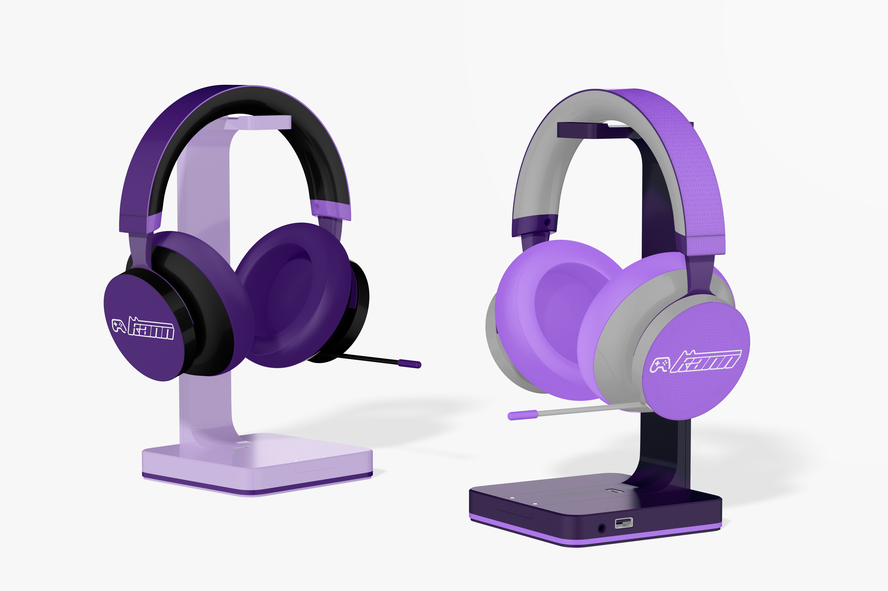

Nuestra tienda oficial

Headset Kann CloudZ inalambricos
Ideado para los gamers más exigentes, el Kann CloudZ inalambrico tiene todo lo que un jugador busca.
Su conectividad inalámbrica permite moverte de un lugar a otro sin cables.
A su vez, su batería de larga duración te dará horas interminables de sonidos envolventes en tus partidas.
Sus orejeras son sinónimo de comodidad. Y como si esto fuera poco, puedes silenciar o encender el micrófono con cancelación de ruido y regular el volumen.

Cuaderno Kann
Cuaderno con formato de libreta, tamaño A5 de 80 hojas rayadas y espiral protegido. Diseñado para la escritura espontánea y recreativa. Es un producto sustentable y duradero